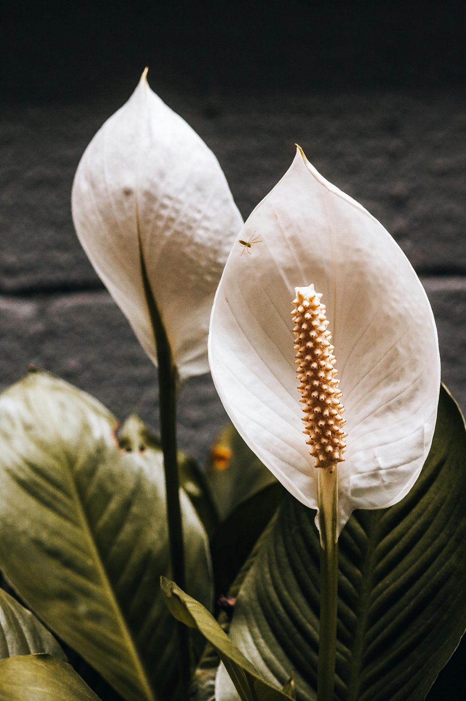

Peace Lily
Scientific Name: Spathiphyllum
Common Names: Spathiphyllum wallisii (most common species) ,Peace Lily, White Sails ,Cobra Plant
Habitat and Distribution
Geographical Range: Peace lilies are native to tropical regions of Central and South America, Southeast Asia, and parts of the Pacific. They thrive in warm, humid climates and are often found in rainforests where they grow in the shade of larger trees
Medicinal Uses
Peace lilies have not been widely used in traditional medicine, and they are mainly ornamental. However, they are excellent indoor plants for improving air quality. They can help filter indoor air pollutants such as: Benzene Formaldehyde Carbon monoxide Ammonia They are known for their ability to break down harmful gases, making them valuable for improving air quality in homes and offices. Caution: While peace lilies can be beneficial for air purification, they contain calcium oxalate crystals, which are toxic if ingested by pets or humans. This can cause irritation of the mouth, digestive tract, and other symptoms if consumed.
How to Grow Peace Lily
- Soil Requirements: Well-draining, rich soil with organic matter is ideal.
- Sunlight: Peace lilies prefer indirect sunlight or partial shade, as direct sunlight can burn their leaves.
- Planting:
- Pot Peace lilies prefer indirect sunlight or partial shade, as direct sunlight can burn their leaves.
- Humidity: Mist occasionally to keep humidity high, especially in dry indoor environments.
- Watering: Keep the soil consistently moist but avoid overwatering.
- Fertilization: Use a balanced, water-soluble fertilizer every 6 weeks during the growing season (spring and summer).